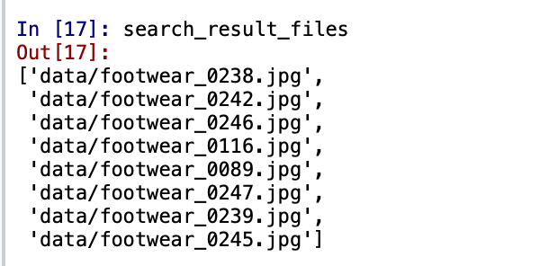

Business Case
Message from the ABC Grocery Team -
Hello Data Scientist,
We have been looking through a lot of our customer feedback lately, and one thing in particular has come up a number of times.
Our customers know we have a great range of competitive products in our clothing section - but they are struggling to find the products they are looking for on our website.
They are often buying much more expensive products, and then later finding out that we actually stocked a very similar, but lower-priced alternative.
We need to remedy this!
I have seen the incredible work you have done so far and wondered if any of this could be applied to the problem we are describing here?
Can Deep Learning be used to help customers find the products they are after? We have provided you some data to use for testing - let us know how you get on!
Thanks in advance,
ABC Grocery Web Team
Abstract
- A Convolution Neural Network is a deep learning neural network, a type of Artificial Neural Network that is used in image recognition. CNN is a type of network architecture which works on pixels of data to recognize images.
- The task of this project is to train the model to recognize related images and return all of the products related to that image.
- I will be leveraging the power of the pre-trained model VGG16 to create a more powerful implementation that will not only classify similar images, but will return similar products.
Introduction
The ABC Grocery has gone through a lot of customer feedback and they have figured out a common problem - the customers are struggling to find the products. Apparently they are buying expensive products when the cheap version of the product is available. Finding all the related products on the website is a difficult task for them. Therefore, the team wants me to figure out a solution for this problem. The team wants me to build a model that will return all the similar looking shoes. VGG16 is a prebuilt image recognition model that was built by google and trained on more than one million images from ImageNet. VGG16 is a perfect model in this case therefore, I will be using VGG16 to retun similar images.
Implementation
1. Reading the data
- The ABC Grocery Team has provided me images of womens' shoes in a folder called data. The team has provided me with two "most bought womens shoes" and the team wants me to find relevant shoes.
- There are 300 different images and they represent the current range of shoes The ABC Grocery team has.
For each of the 300 images I want to return the output from the global average pooling layer at the end of the network architecture i.e. the end prior to any of the dense or output layers. The global average pooling layer will be slightly different than the normal output pooling layer. I will be creating the max pooling layer. For each image the output from the global average pooling layer will be a one dimansional array or vector of 512 numbers and these numbers will represent the features that are found in that image and this will be known as the feature vector. I will store that feature vector of those 512 numbers for each of the 300 base images in other words I will create an object which contains 300 dots of 512 numbers. The second thing I will do is for any image that is used as a search image i.e. when a customer passes in a new image to search a shoe they like to look up I will create a feature vector of 512 numbers for that image exactly the same way I did for the base images. Then I will compare the feature vector of base images and feature vector of new search image to find vector similarity and return relevant images from the base images that appear to have closest match.
2. Importing Libraries
- Model: To work with keras functional api I will import Model from tensorflow.keras.models
- load_model: To use the saved model I will import load_model from tensorflow.keras.models
- VGG16: To work with VGG16 I will import the model from tensorflow.keras.applications.vgg16
- preprocess_input: VGG16 requires specific preprocessing therefore I will import the preprocessing steps from tensorflow.keras.applications.vgg16
- NearestNeighbors: To compare seach image with base set of image to check which images are similar I will use NearestNeighbors from sklearn.neighbors
Bringing in the VGG16 Model
I want the network till the pooling layer - this is where the features will come from therefore I will exclude the top of the network. I am only interested in the features that it learned along the way.
Image Parameters
VGG16 works with different sets of parameters from image width, image height and the number of channels. VGG16 works better when image width and image height is 224 pixels and the channels are 3 as our images are colored images.
Network Architecture
I will use the VGG16 model and by excluding the top and global average will be applied to the final output layer. The output will be an array of numeric information rather than many arrays to represent the set of all features. The parameters for VGG16 would be the input_shape which will include image widht, height and number of channels. The parameter include_top will be False as I want the network to be till the pooling layers and the parameter for pooling would be avg as I want the global average.
From the above architecture I can observe that the final output layer is the global average pooling layer with a total of 512 features. All of the features have been summarized into one vector of 512 numbers and for each image this will represent its features. This feature vector will be used to compare the images and assess their similarities.
Creating the Model object
Using Keras functional api imported above I will use Model with parameters of inputs and outputs where input will be vgg.inputs
and outputs will be vgg.layers[-1].output where -1 represents the final layer. I will save the model to a location in my system.
Preprocessing and Featurizing Images
This step is important as I will have to preprocess all the images so that the keras and VGG16 can accept the images so that the images can be passed into the model and output can be a feature vector.
Preprocess Image
The preprocess image function will receive filepath as a parameter, the image will be converted to an array, the image dimensions will be expanded
to fit the batch dimension as Keras wants the batch dimension to pass images in batches. Finally, images will be preprocessed using preprocess_input
functionality of Keras.
Featurize Image
I will use this function to featurize each image as the final output is the global average pooling layer that will give me the feature vector.
Featurize Base Images
This step will featurize all of the 300 base images using the functions preprocess_image and featurize_image that I created in the above two steps. I will also store all of the feature images in pickle files to assess the similarity of new images that are input into the image search engine.
From the above image I can see that the features are saved as pickle files and I can use them whenever I need
Passing New Images and Returning Similar Results
-
Step 1 - Load in required Objects
Using the load_model functionality of Keras, I will load the model that I had saved before. I will also load the filenames and feature vectors for each of the 300 images that I have saved in the previous steps. -
Step 2 - Search Parameters
The images similar to the below images need to be searched. I will find 8 similar images to the below image.
-
Step 3 - Preprocess and featurize search image
To compare the search image with the preprocessed and featirized base images I will featurize and preprocess the new image too. -
Step 4 - Instantiate nearest neighbors logic
To find the 8 closest images to the search image, I will use the nearest neighbors alogithm. -
Step 5 - Apply to feature vectore store
Applying the nearest neighbors to feature vectors to get 8 closest features. -
Step 6 - Return search results for each image
Returning the search results is the backbone of the entire process. I will pass the search feature vector to the object I created for nearest neighbors the search result will return the 8 nearest neighbors and for each of the image it will return the cosine distance and index of the feature vector from the feature vector store that contains all 300 images.The above image shows the nearest cosine distances and the indices where the most similare images are. -
Step 7 - Convert closest image indices & distances to lists
I want to plot all the most similar images using matplotlib. For that I need to convert the closest distances and indices to be lists. hence, I will converst the indices and distances. -
Step 8 - Get list of filenames for search results
To get the filenames for each of the search results and check how good the model has performed I will append all the filenames in an object. -
Step 9 - Plot results
Plotting all the images that I have got using in the above step.From the image above I can see all the 8 images from the base set that my network predicted as similar to the search image based upon the cosine distance. At the top of each image is the cosine similarity score.
Conclusions
From the above implementation I can conclude that I can find similar images using deep learning network VGG16. I can go to The ABC Grocery Team and confidently conclude that using my network architecture the team can solve the customers' problem of not finding relevant products. This model can be implemented in the search engine for customers to search for most similar products. This way the customers would be able to find all the products with different prices easily.